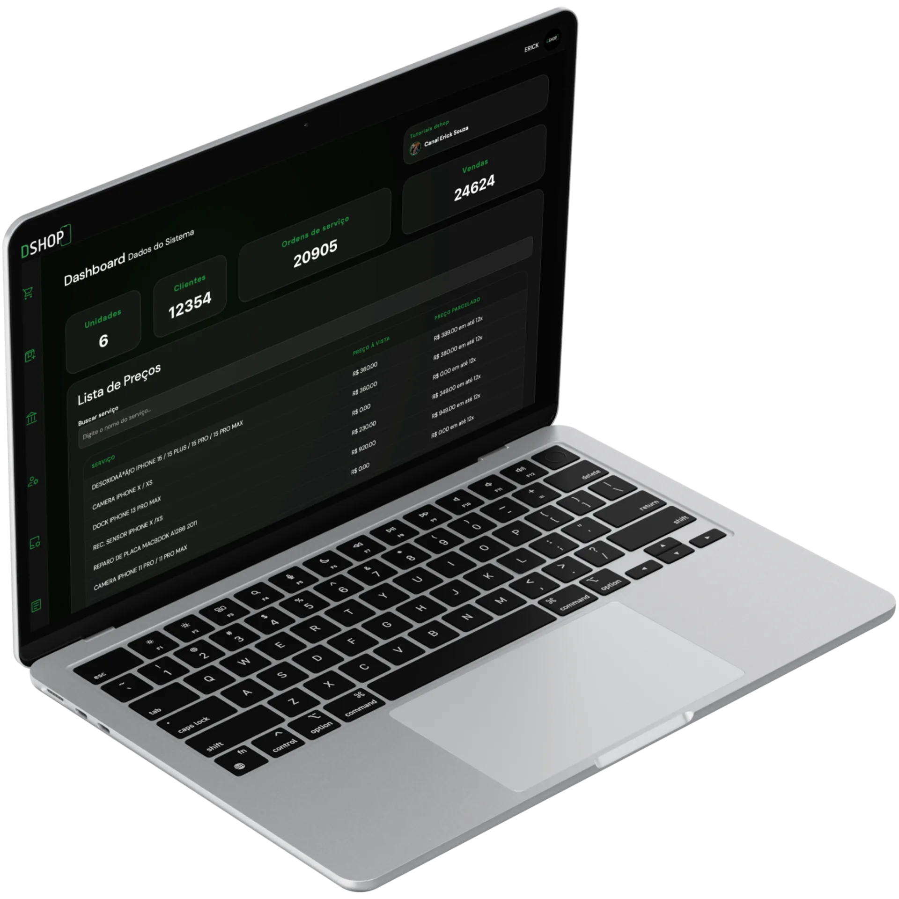
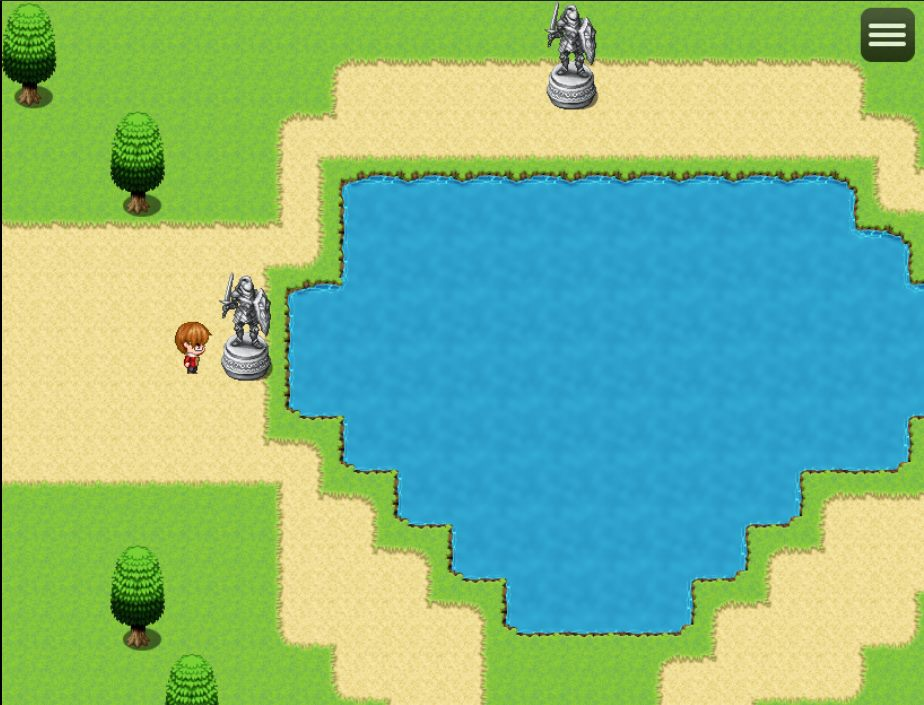

Manual QA · Almada, Portugal
I test the details
people scroll past.
I’m Vinícius — a manual QA tester with a builder’s background. I came from web and game development, and now I use that knowledge to find what breaks, document it clearly, and help teams ship calmer releases.
Open to junior QA roles, internships, and test collaborations.
A real finding from self-directed testing.
- Based in Almada, Portugal
- Focus Manual QA · UI/UX · Product
- Languages Portuguese · English
- Background Web & game development
01 — Selected work
Testing real products. Documenting what matters.
Self-directed QA on real, public-facing products — written up the way I’d want to receive it as a developer. One project, documented properly, with two full reports below.
Manual QA Portfolio
A hands-on portfolio built from testing public websites across functional flows, search, localization, and responsive layouts. Each finding is written as a reproducible report: steps, expected vs. actual, severity, and context.
Visit the QA portfolioField notes
What a bug report from me looks like.
Two examples from self-directed testing of public websites — clear enough for a developer to reproduce without a follow-up call.
QA-01 Language switch drops on search results
Steps to reproduce
- Open the Startup Portugal website.
- Switch the site language to Portuguese.
- Search for a Portuguese term such as “idade”.
Expected
The results page and all interface labels remain in Portuguese.
Actual
The results header and some labels revert to English: “Search results for: idade”.
Why it matters A mixed-language results page makes the product feel unfinished and weakens trust for Portuguese-speaking users.
QA-02 Search results miss the intent of the query
Steps to reproduce
- Open the Visit Sintra website with Portuguese selected.
- Search for “parques” (parks).
- Review the first page of results.
Expected
Results for parks, gardens, and natural attractions near Sintra.
Actual
Unrelated general-information articles appear ahead of relevant attractions.
Why it matters A visitor looking for a place to visit may leave without finding it, even though the content exists on the site.
Practice findings, shared as learning examples — not paid audits. I report issues responsibly and without publishing anything sensitive.
See the full QA portfolio02 — Build foundation · 2025
Before I tested products, I built them.
In 2025 I worked on the interface of a commercial management system — service orders, inventory, cash flow, finance. Dense, real workflows with no room for vague UI. I’m not a full-time developer today, but that year is why I can read a layout, anticipate where it breaks, and describe problems in a developer’s language.

2025Commercial product · Web interface
Dshop Pro — Standard
Interface work on the Standard version of a management platform for repair shops: service orders, inventory, cash flow, and finance in one system. Real workflows, dense screens, no room for vague UI.
Also in the toolkit
- React (foundational)
- Git & GitHub
- Responsive layouts
- Browser DevTools
- Technical documentation
Builder context, not an engineering claim. QA is my focus.
03 — Off the clock
The worlds I build when I’m not testing.
Personal and collaborative projects. Not client work, and not QA case studies — just places where I practise structure, bilingual content, and shipping something people can visit.
Worldbuilding archive · 2026
Nexus: Operação Paralela
A large Portuguese-language worldbuilding site: factions, dossiers, and a dense lore library. I built the structure and navigation so the universe stays readable as it grows.

202504 — About
A builder’s eye. A tester’s habits.
I’m Vinícius da Silva Cardoso, a 16-year-old manual QA tester based in Almada.
I started with code — HTML, CSS, JavaScript, React, and RPG Maker MZ — and shipped a bilingual game site plus interface work for a commercial management system. Building those projects taught me how much can go wrong between a design file and a real browser.
Somewhere in that process, I noticed what I actually enjoyed most: opening a product, following a user flow, and finding the moment it stops making sense. That led me to manual QA — functional testing, UI and responsive checks, localization, and bug reports that tell a developer exactly where to look.
I’m early in this career and honest about it. I’m not a full-time engineer, and I’m not pretending to be a senior tester. What I bring is a builder’s understanding of the web, a product-minded eye for friction, and documentation habits that respect the reader’s time. I’m looking for a junior QA role or collaboration where I can keep learning and add real value from day one.
A good bug report doesn’t just say something is broken. It shows how, where, and why it matters.
At a glance
- Based in
- Almada, Portugal
- Age
- 16 · early-career
- Languages
- Portuguese (native) · English (working)
- Focus
- Manual QA · UI/UX · Product
- Learning
- Postman · GraphQL basics · API testing
- Tools
- DevTools · GitHub · Jira · Trello · Notion · Slack
Open to work Junior QA, internships, and test collaborations.
05 — How I work
Curious enough to break it. Careful enough to explain it.
My process is simple and repeatable — built for small teams that need clarity more than ceremony.
-
Understand the flow
I start by using the product like a person would: finding the critical path, the side doors, and the states the happy path ignores.
-
Test the edges
Different screen sizes, languages, inputs, empty states, and error states. The bug is often one step outside the demo.
-
Document what matters
Steps to reproduce, expected vs. actual, severity, and evidence. No vague “it doesn’t work” tickets.
-
Verify the fix
Re-test the original issue and the areas around it, so a fix doesn’t quietly create the next bug.
Testing
Documentation
Technical
Currently learning API testing with Postman, GraphQL basics, and how to read JSON/YAML payloads — so I can test beyond the interface.
06 — Contact
Have a product that needs a second pair of eyes?
I’m open to junior QA roles, internships, and freelance test passes. If you want a careful tester who documents what they find, send me a note.
Based in Almada · Available remotely and locally